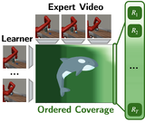

SCORE: Support-Constrained RL Enables Real-World Policy Improvement without Real-World Experience
Preprint, 2026
Website arXiv soon
Hi, I'm Will. I'm a visiting researcher at the University of Washington, where I'm working on reinforcement learning for dexterous manipulation with Prof. Abhishek Gupta. I did my undergraduate at Cornell, where I worked with Prof. Sanjiban Choudhury on inverse reinforcement learning from videos.
I'll be starting my PhD at the University of Washington in Fall 2026!
* indicates equal contribution
Preprint, 2026
Website arXiv soon

International Conference on Machine Learning (ICML), 2025